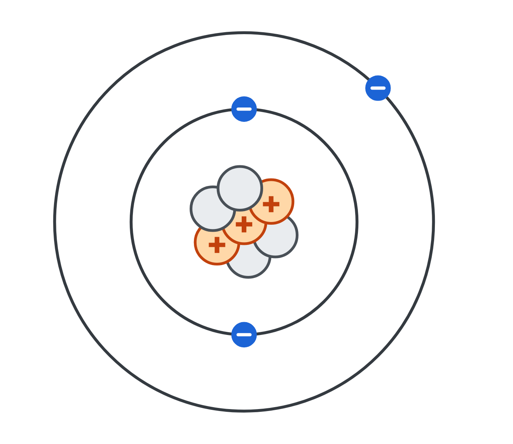
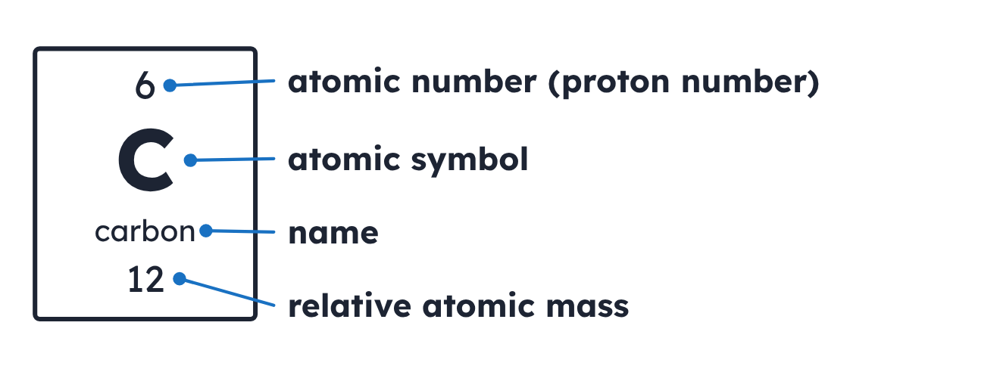
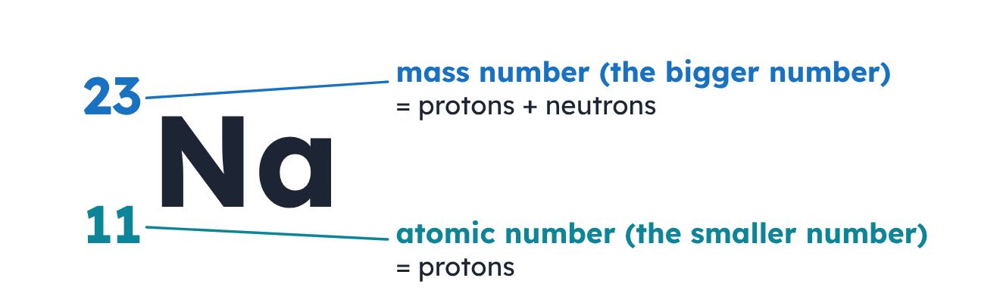

M3 Lesson 1 · Inside the atom
1▶️ Watch | 2✏️ Train on paper | 3🎯 Check |
 |
|


P protons = atomic number | E electrons = atomic number | N neutrons = mass number − atomic number |
Definitions to learn: the atom (pp 69 to 70)
Atom: Atoms are the building blocks of matter. The atom is the smallest unit of matter that can take part in an ordinary chemical reaction.
Subatomic particles: The atom consists of 3 subatomic particles: protons (found in the nucleus, positive charge), neutrons (found in the nucleus, no charge) and electrons (found in energy shells, negative charge).
Nucleons: Protons + neutrons = nucleons (because they are found in the nucleus).
Definitions to learn: neutral atom and the two numbers (pp 72 to 73)
Neutral atom: An atom has the same number of protons and electrons.
Atomic number (proton number): The number of protons found in the nucleus of an atom.
Chemical symbol: An abbreviation of the element name.
Mass number (nucleon number): The total number of neutrons and protons in the nucleus of an atom.
The PEN rules (p 75)
Working out p, e and n: Number of protons = atomic number. Number of electrons = atomic number (in a neutral atom). Number of neutrons = mass number − atomic number.
The check-in comes after it